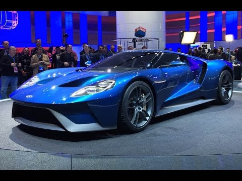

My name is John Pespisa. I am currently taking online web development courses with Treehouse! I have completed the "How to make a Website" and "CSS Basics" courses in the "Front End Web Development" track. I am having a blast so far and hope to learn much more in the coming months! In my free time I enjoy reading, going to car shows, hanging out with friends, video games, fishing, and hiking! I created this website to showcase what I've learned during my Treehouse courses and to practice using HTML and CSS. Read about some of my interests below.
The upcoming Ford GT is an exciting prospect!
I am a huge car fanatic! I got into cars when I got my first job out of college and was finally able to afford a decent one. I recently purchased a 2013 Ford Focus ST, which is a performance oriented, turbocharged version of the regular Focus hatchback. Hot-hatchbacks like these are gaining serious enthusiast support in the US. They have always been a staple part of the performance market in Europe and Japan, starting with the 1976 Golf GTI.
Mt. Lafayette is one of my favorite hiking locations in New Hampshire
I try to hike at least a few mountains every year. My favorite hiking location is the Franconia Notch area in New Hampshire. There are a variety of mountains and other hikes in the area that are suitable for both beginner and advanced hikers. My personal favorite mountain to hike is Mt. Lafayette (pictured). It is the second highest mountain in New Hampshire and the trail spanning the entire mountain ridge has a breathtaking view. There are a few different trail options, but I prefer the Bridle Path trail which joins the Appalachian Trail and leads to the peaks of nearby Mt. Lincoln, Liberty, and Flume. This trail loop is about 9 miles long and can be strenuous but it's well worth the experience.